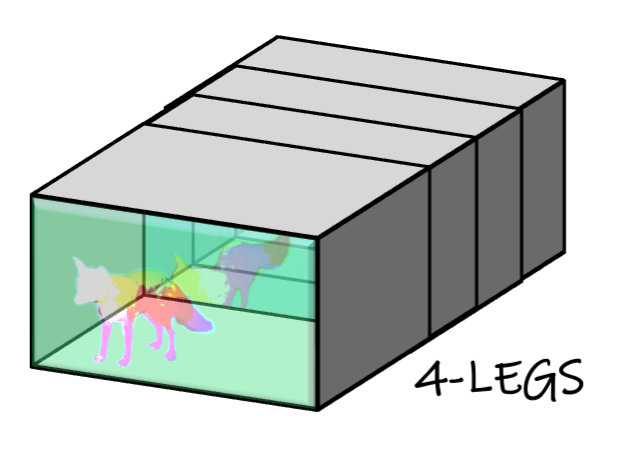

Gal Fiebelman |
|
I am a Computer Science PhD Candidate at The Hebrew University of Jerusalem, under the supervision of
Dr. Sagie Benaim. I am interested in computer graphics, computer vision
and machine learning. Specifically, my research focuses on high-level semantic understanding and manipulation of 3D and 4D representations.
|
|
I received my MSc from Tel Aviv University in Computer Science under the supervision of Dr. Hadar Averbuch-Elor and my BSc from The Hebrew University of Jerusalem in Mathematics and Computer Science. I also spent a few years in the industry developing Computer Vision algorithms. | |
Let it Snow! Animating Static Gaussian Scenes With Dynamic Weather EffectsGal Fiebelman,
|
|
|  |
4-LEGS: 4D Language Embedded Gaussian SplattingGal Fiebelman,
|
Spice·E: Structural Priors in 3D Diffusion using Cross-Entity Attention
|
|
Vox-E: Text-guided Voxel Editing of 3D Objects
|